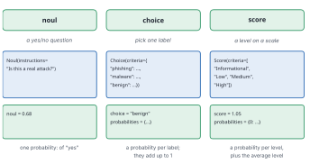
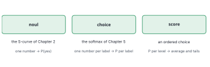
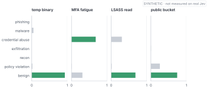
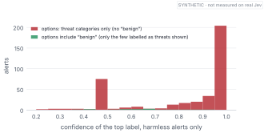
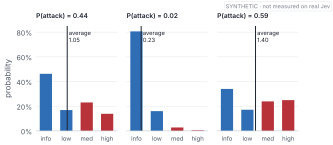
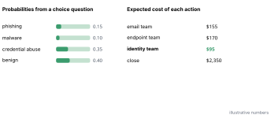

Perfection is achieved, not when there is nothing more to add, but when there is nothing left to take away.
— Antoine de Saint-Exupéry, Wind, Sand and Stars, 1939
Jev asks you to put every question into one of three shapes. Yes or no. Pick one. Rate it on a scale.
That’s the first thing people push back on:
“Only three? Real decisions are messier than that.”
They are. But look back at Chapter 7’s agent, or at your own working day, and notice how many of those messy decisions break down into a handful of these three shapes. Is this a real attack? Which team should handle it? How urgent is it? The mess usually lives in how the question is asked, not in the shape of the answer.
This chapter takes each type in turn, with the design choices that make it work and the traps that make it fail. The traps are the more useful part.
By the end of this chapter
Know when to use noul, choice and score, and what each returns.
Write questions that are clear enough to answer well: one fact at a time, with yes and no spelled out.
Avoid the forced-choice trap by giving every real case a label.
Read a score’s whole distribution, and act on its tails rather than its average.
Choose actions by expected cost across all options, and ask several typed questions at once.
10.1 Three shapes

Figure 10.1: The three question types, what you send, and what comes back. A noul returns one probability. A choice returns a probability for every label. A score returns a probability for every level, plus the average level.
If they look familiar, they should. Each is something you’ve already built.

Figure 10.2: Each type is an old friend. A noul is the S-curve from Chapter 2, turning evidence into one probability. A choice is the softmax from Chapter 5, turning a score per label into a probability per label. A score is a choice whose labels come in order.
10.2 Noul: one fact, yes or no
The odd name is TypeSafe’s, for a yes-or-no question. You give it instructions, a question or a statement, and optionally a description of what counts as yes and what counts as no. You get back one number: the probability of yes.
A noul is the most useful type and the easiest to ask badly. Three habits help.
One fact per question. “Is this a real attack on a critical server?” bundles two facts, and the answer can’t tell you which one failed. Ask two nouls and combine them in your code, where the logic is visible.
Spell out yes and no. “Is this malicious?” leaves the edges vague. Is an employee breaking policy malicious? Is a penetration test? Say what counts. The API lets you describe both outcomes:
Try it
client = TypeSafeClient(api_key="mock", transport=MockJevTransport())alerts = soc.load()attack = Noul( instructions="Is this alert a real attack?", criteria={"true": "A real attacker or real malware is involved","false": "Normal activity, a test, or a false positive"})r = client.system_one(state=alerts.description[118], questions={"attack": attack})print(round(r.nouls["attack"].noul, 3))
No double negatives. “Is this not unlikely to be benign?” is hard for people and models alike. Ask the question the right way up.
10.3 Choice: pick one, and make sure there’s a right one
A choice gives the model a set of labels, each with an optional description, and returns a probability for every label. The probabilities add up to 1.

Figure 10.3: Category probabilities for four alerts. Some are sharply decided; others spread their probability over two or three labels. The spread is information: it tells you how sure the model is, and between what.
That “add up to 1” is the property to respect, because it cuts both ways. The model must distribute all of its belief across the labels you gave it. If the right answer isn’t among them, the probability doesn’t vanish. It lands on the wrong labels.
Here’s what that looks like. I asked the mock to classify 400 harmless alerts twice: once with the full list of categories, including “benign”, and once with only the threat categories.

Figure 10.4: How confident the top label was for harmless alerts. With “benign” among the options (green), almost all were labelled benign; only the few that weren’t are shown. Without it (red), every harmless alert got a threat label, most of them with high confidence.
With “benign” available, 96% of the harmless alerts were labelled benign. Without it, every one of them got a threat label, with a median confidence of 0.95 (Figure fig-forced). The model wasn’t wrong, exactly. You asked it which threat each alert was, and it answered. But anyone reading “malware, 0.95” would draw the wrong conclusion.
A choice’s probabilities add up to 1 over the options you gave. Make sure every real case has somewhere to go.
So include “benign”, “none”, “other” or “not enough information” whenever those can happen. Make the options mutually exclusive, too: if two labels can both be true at once (“phishing” and “credential theft”), a choice will split its probability between them and neither will look confident. When things genuinely overlap, use several nouls instead of one choice.
10.4 Score: levels in order, and the tails
A score gives the model an ordered list of levels, and returns a probability for each, plus the expected score: the probability-weighted average level.
That average is convenient, and it can mislead you badly.

Figure 10.5: Severity probabilities for three alerts, with the average level marked. The first alert’s average sits at “low”. But its probability is split between “informational” and “medium or high”. Almost nothing is actually at “low”.
Look at the first panel of Figure fig-severity. The alert’s average severity is 1.05, which reads as “low: review within a week”. But there’s hardly any probability at low. The model is really saying: this is either nothing, or it’s serious. There’s a 37% chance it’s medium or high. An average of two very different possibilities describes neither of them.
That happens whenever the model is unsure about whether something is real. A harmless alert would be informational, and a real one would be serious, so the distribution splits into two humps. So act on the tail:
t = client.system_one(state=alerts.description[118], questions={"severity": Score(instructions="How severe is this?", criteria=soc.SEVERITY_LEVELS)})p = t.scores["severity"].probabilitiesprint(f"average level {t.scores['severity'].score:.2f}; "f"P(medium or high) = {p[2] + p[3]:.2f}")
average level 1.05; P(medium or high) = 0.37
“Page someone if P(medium or high) is above 0.3” is a rule you can reason about and set with costs. “Page someone if the average is above 1.5” isn’t.
Averages hide tails. Put thresholds on the probability of the levels you care about.
10.5 Deciding with the whole distribution
The same lesson applies to choices. The label with the highest probability isn’t necessarily the one to act on.

Figure 10.6: An illustrative choice between four labels, and the expected cost of four actions. “Benign” is the single most likely label, but closing the alert is the most expensive action, because the other 60% of the probability is spread across threats that are costly to miss.
In Figure fig-expected-cost, “benign” is the top label at 0.40, but 0.60 of the probability says some kind of threat. Closing the alert risks all of those. The cheapest action is to route it to the identity team, the most likely threat. That’s the Chapter 4 formula generalised: for each action, add up what it costs under each possible truth, weighted by that truth’s probability, and take the cheapest.
It’s also why you want probabilities for every option, not just the winning label. A text answer that says “benign” throws away exactly the information you need here.
10.6 Several questions, one call
Real decisions usually need a few answers about the same situation. You can ask them together. The state is sent once, and each question gets its own typed answer. The SDK even lets you declare the response as your own class, so your code works with typed fields instead of dictionaries:
class Triage(SystemOneResponse): attack: NoulAnswer kind: ChoiceAnswer severity: ScoreAnswert = client.system_one( state=alerts.description[118], questions={"attack": attack,"kind": Choice(criteria={c: Nonefor c in soc.CATEGORIES}),"severity": Score(criteria=soc.SEVERITY_LEVELS)}, response_model=Triage)print(round(t.attack.noul, 2), t.kind.choice, round(t.severity.score, 2))
0.44 benign 1.05
Then combine the answers in ordinary code, where every rule is visible and testable, like Chapter 14’s route() function.
Where this breaks
Three types can’t express everything. Numbers on a continuous range (“how many megabytes?”), free-text fields (“which username?”) and structured extraction still need something else, often an LLM, as Chapter 15’s “extract, then decide” pattern shows. The answers of separate questions in one call aren’t guaranteed to be consistent with each other: a low P(attack) alongside a high P(severity high) is possible, and your combining code should expect it. And question wording matters: a clearer description can move the probabilities, so test wording changes like any other change.
Set the threshold
Kestrel pages on-call when P(severity medium or high) is at least some line. A false page costs $400; a missed serious incident costs about $10,000 more than handling it in the morning. Using the Chapter 4 formula, where does the line go? Would you use the same line for alerts on critical assets?
(400 ÷ 10,400 ≈ 0.04, so page at about 4%. That’s low, and it would page a lot, which is why Chapter 14 will cap pages by what on-call can absorb. For critical assets a miss costs more, so the line should be even lower.)
Show me your flowcharts and conceal your tables, and I shall continue to be mystified. Show me your tables, and I won’t usually need your flowcharts; they’ll be obvious.
— Fred Brooks, The Mythical Man-Month, 1975
Brooks meant data structures in software. The same holds for decisions: get the shape of the question and its answers right, and most of the logic around it becomes obvious.
10.7 Where we are
Three shapes, we found, cover most small decisions, as long as the questions are asked carefully. A noul wants one fact and a clear idea of what yes means. A choice spreads all its belief over the options you give it, so every real case needs one. A score’s average can describe a case that doesn’t exist, so thresholds belong on the tails. And for all three, the whole distribution beats the top answer, because decisions are made with costs.
Everything here has assumed the probabilities are honest. Time to check.
Rewrite each bundled question as separate nouls, and say how you’d combine them: “Is this a phishing email that someone clicked on?”; “Is this login suspicious and from an admin account?”
In the lab, remove “benign” and “policy_violation” from the choice for 50 harmless alerts. What’s the mean confidence? Then add an “other” option instead. What changes?
Find an alert in the lab whose severity distribution has two humps. What does its P(attack) look like? Why do the two go together?
Design the typed questions for a decision in a domain you know (loan applications, support tickets, insurance claims). Which are nouls, which choices, which scores? What’s the “benign” option each choice needs?
Next: TypeSafe says Jev’s probabilities are calibrated, and a critic says they can’t be. Chapter 11 shows you how to find out for yourself.